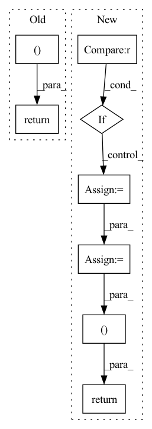

Pattern ID :2817
Before Change
return loss, None
else:
return None, self.decode(self_attended_context, final_context, context_padding, final_question, question_padding,
context_limited, question_limited,
decoder_vocab, rnn_state=context_rnn_state).data
def probs(self, outputs, vocab_pointer_switches, context_question_switches,
context_attention, question_attention,
context_indices, question_indices,After Change
loss += self.args.encoder_loss_weight * encoder_loss
return loss, None
else:
if decoder_wrapper is None :
decoder_wrapper = self.decoder_wrapper(self_attended_context, final_context, context_padding, final_question, question_padding,
context_limited, question_limited, decoder_vocab, rnn_state=context_rnn_state)
else:
current_token_id = current_token_id.cpu().apply_(self.map_to_full).to(current_token_id.device)
// return (next_token_logits, past) where `past` includes all the states needed to continue generation
logits = decoder_wrapper.next_token_probs(current_token_id)
// print("logits", logits.shape)
return logits, decoder_wrapper
def probs(self, outputs, vocab_pointer_switches, context_question_switches,
context_attention, question_attention,
context_indices, question_indices,In pattern: SUPERPATTERN
Frequency: 4
Non-data size: 8
Instances Fragment ID: 9331887
Project Name: stanford-oval/genienlp
Commit Name: 8750a12fd1be465524e5aa235e507dd421607034
Time: 2020-07-24
Author: s.j.semnani@gmail.com
File Name: genienlp/models/mqan_decoder.py
M Class Name: MQANDecoder
N Class Name: MQANDecoder
M Method Name: forward(10)
N Method Name: forward(8)
M Parent Class: nn.Module
N Parent Class: nn.Module
M File Name: genienlp/models/mqan_decoder.py
N File Name: genienlp/models/mqan_decoder.py
M Start Line: 86
M End Line: 144
N Start Line: 82
N End Line: 149
Before Change
if need_transpose:
quantize = rearrange(quantize, "b d n -> b n d")
return quantize, embed_ind, commit_loss
After Change
loss = torch.tensor([0.], device = device)
if self.training:
if self.commitment > 0 :
commit_loss = F.mse_loss(quantize.detach(), x)
loss = loss + commit_loss * self.commitment
if self.orthogonal_reg_weight > 0:
orthogonal_reg_loss = orthgonal_loss_fn(self.codebook)
loss = loss + orthogonal_reg_loss * self.orthogonal_reg_weight
quantize = self.project_out(quantize)
if need_transpose:
quantize = rearrange(quantize, "b d n -> b n d")
return quantize, embed_ind, loss
Fragment ID: 9331898
Project Name: lucidrains/vector-quantize-pytorch
Commit Name: be2e021bf30d70ec8d709c1ea3ce5ef796a00058
Time: 2021-12-02
Author: lucidrains@gmail.com
File Name: vector_quantize_pytorch/vector_quantize_pytorch.py
M Class Name: VectorQuantize
N Class Name: VectorQuantize
M Method Name: forward(2)
N Method Name: forward(2)
M Parent Class: nn.Module
N Parent Class: nn.Module
M File Name: vector_quantize_pytorch/vector_quantize_pytorch.py
N File Name: vector_quantize_pytorch/vector_quantize_pytorch.py
M Start Line: 293
M End Line: 308
N Start Line: 300
N End Line: 330
Before Change
attn = attn * mapping_mask
output = torch.bmm(attn, v)
return output, attn
After Change
if key_mask is not None:
attn = attn.masked_fill(key_mask == 0., -np.inf)
if attn_prior is not None :
attn = self.log_softmax(attn) + torch.log(attn_prior.transpose(1, 2) + 1e-8)
attn_logprob = attn.unsqueeze(1).clone()
attn = self.softmax(attn)
if query_mask is not None:
attn = attn * query_mask
attn_raw = attn.clone()
if mapping_mask is not None:
attn = attn * mapping_mask
output = torch.bmm(attn, v)
return output, (attn, attn_raw), attn_logprob
Fragment ID: 9331908
Project Name: keonlee9420/portaspeech
Commit Name: 814cdda1ebf7dc626708db2bcf20fdb9207f4345
Time: 2022-02-13
Author: keonlee9420@gmail.com
File Name: model/blocks.py
M Class Name: ScaledDotProductAttention
N Class Name: ScaledDotProductAttention
M Method Name: forward(8)
N Method Name: forward(7)
M Parent Class: nn.Module
N Parent Class: nn.Module
M File Name: model/blocks.py
N File Name: model/blocks.py
M Start Line: 615
M End Line: 623
N Start Line: 612
N End Line: 632
Before Change
out = torch.matmul(w.transpose(1, 2), encoder_outputs)
return out, w
class DurationPredictor(nn.Module):
Duration Parameter Predictor After Change
w = self.get_alignment_energies(g, t) // [B, L, T]
if mask is not None :
w = w.masked_fill(mask.unsqueeze(-1), 0.0)
attn = w / (torch.sum(w, dim=1).unsqueeze(1) + 1e-8) // [B, L, T]
out = torch.bmm(attn.transpose(1, 2), encoder_outputs)
return out, attn
class DurationPredictor(nn.Module):
Duration Parameter Predictor Fragment ID: 9331874
Project Name: keonlee9420/wavegrad2
Commit Name: 523ec241c64ab635218f32d071fd85fbc469e178
Time: 2021-07-13
Author: keonlee9420@gmail.com
File Name: model/modules.py
M Class Name: GaussianUpsampling
N Class Name: GaussianUpsampling
M Method Name: forward(4)
N Method Name: forward(4)
M Parent Class: nn.Module
N Parent Class: nn.Module
M File Name: model/modules.py
N File Name: model/modules.py
M Start Line: 115
M End Line: 135
N Start Line: 120
N End Line: 134